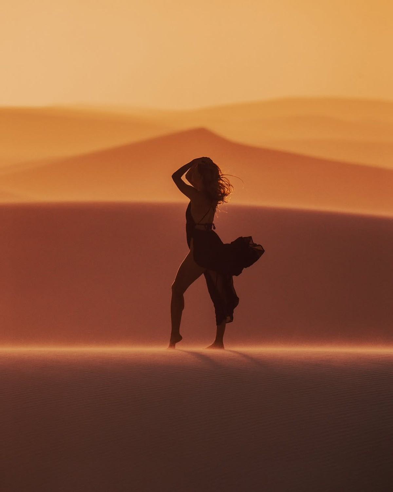
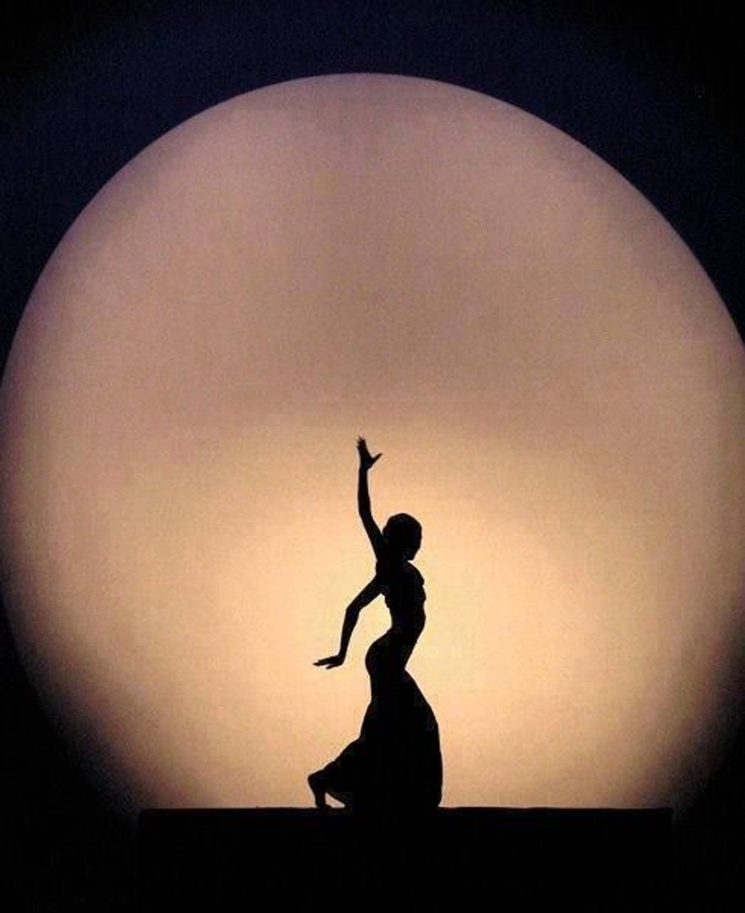
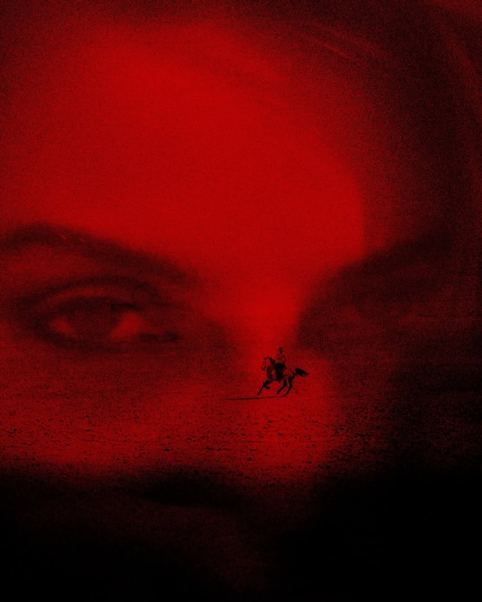

Arrival
Private welcome, visual orientation, and the first symbolic frame.
Cairo experience
This replaces the generic Stitch trip marketing with a more coherent frame: residency, private guidance, and contextual cultural access.

Arrival
Private welcome, visual orientation, and the first symbolic frame.

Residency
Embodied sessions in movement, image, posture, and presence.

Intimacy
Small-group or private study, camera moments, and symbolic styling.
Included atmosphere